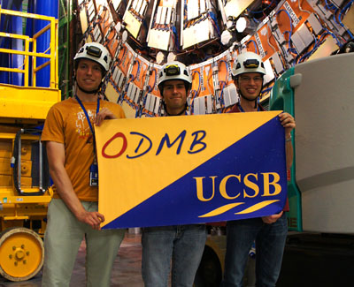
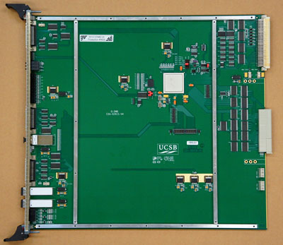
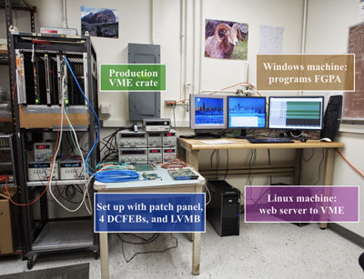
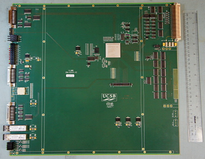
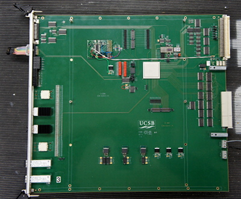
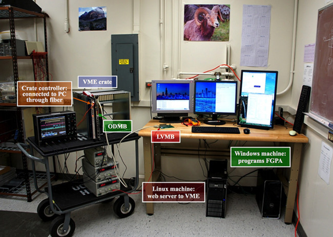

Overview
These two talks give an overview of the ODMB project at its context:- Overview of the CSC electronics (26 April 2018)
- Overview of the ODMB history and design (4 May 2018)
See here the instructions to turn on the ODMB lab.
Hardware gallery

End of ODMB installation into CMS by Manuel, Jack, and Adam.

Top view of the ODMB.V4, the production board.

ODMB test bench at UCSB with production VME crate.

Top view of the ODMB.V2 prototype.

Top view of the ODMB.V1 prototype.

First ODMB test bench at UCSB with partial VME crate. LVMB being currently tested.